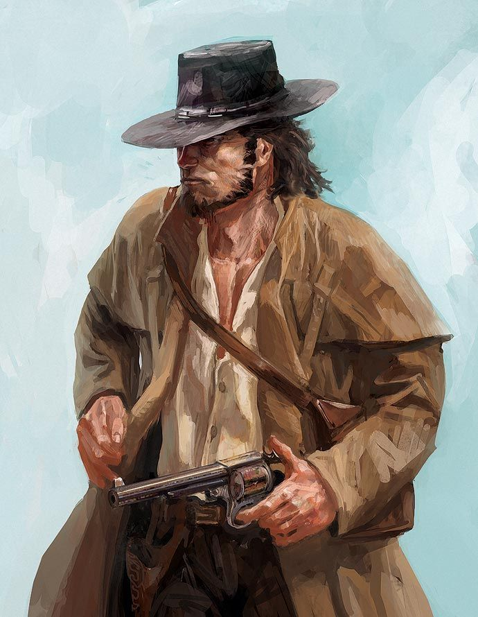

Você observa o xerife se aproximando do barman sem saber o que vai acontecer...
Entretanto sente que precisa agir
Faça sua escolha:

- Vejo o barman sacando a arma, entao atiro nele primeiro
- saio da taverna com meu bando para um duelo "justo" com o xerife
- Após ver o barman tomando uma surra do xerife prefiro me abster